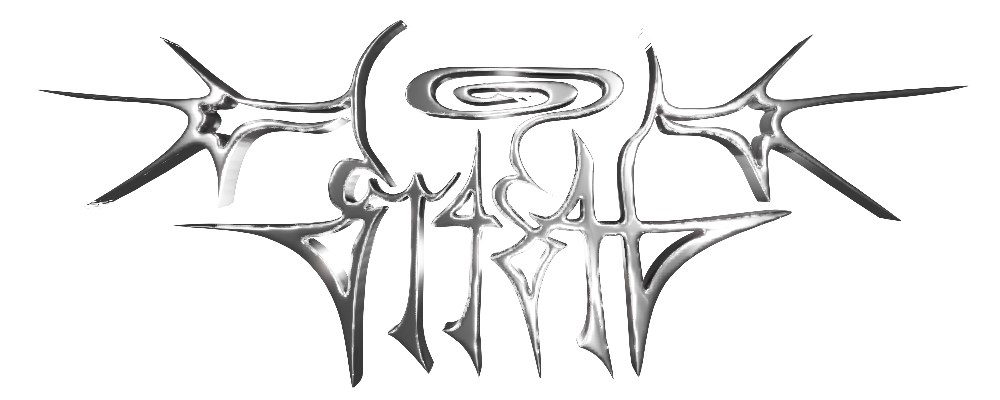

Tasha Oest O'Leary
Sous mes différents alias: Ash, MewMew PewPew et St4sh, je me considère comme un artiste et musicien interdisciplinaire.
J’aime aborder mon monde en profondeur et en apprendre ses beautés et ses histoires. Sensoriellement, je me retrouve fréquemment dans le maximalisme, autant dans mes idées que dans mes expressions artistiques en explorant autant des médiums physiques que digitaux. Ce besoin de créations authentiques et spontanées m’amène à raconter des histoires sous des angles variés en passant par l’introspection, la recherche, ainsi que mes critiques et souhaits de sociétés.
Sentez vous libre de faire le tour de mon petit recueil d'archives virtuelles!